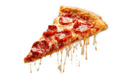

Homemade Pizza

Ingredients
Mass
- 1/2kg Wheat fluor
- 1/2 Tablespoon of salt
- 1 Sachet of biological yeast
- 2 Tablespoon of sugar
- 2 Cups of warm water
Filling
- Tomato Sauce
- 3 Tomatoes cut into slices
- 300g of mozzarella cheese in pieces (not slices)
- Oregano to taste